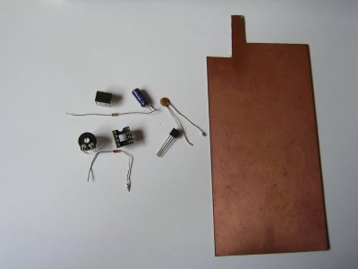

Ejtöernyõ idözitõ kapcsolás
Alkatrészek:
- -NE555 idõzítõ IC
- -8 lábú IC foglalat
- -22uF min. 16V elektrolit kondenzátor
- -10nF min. 16V kondenzátor
- -470k trimmer potméter
- -1N4148 dióda
- -470 ohmos ellenállás
- -BC337 tranzisztor
- -kapcsolók
- -vezetékek
- -9V-os elem csatlakozó
|
Szükséges eszközök:
- -nyák (nyomtatott áram kör) lemez
- -fûrész vagy lemezvágó olló
- -tû
- -alkoholos filctoll
- -maró oldat
- -1mm-es fúró
- -fúrógép
- -forrasztópáka
- -ón, folyasztószer
|

|
- Szerezzük be az alkatrészeket, és a szükséges eszközöket.

- Fûrésszel vagy lemezvágó ollóval (ezzel egyszerûbb) vágjuk ki a megfelelõ méretet. Most a 30x25mm-es méretben készítjük el az idõzítõt.
- A kivágott lemezt tisztítsuk meg szép fényesre súrolószerrel. Utána már ne tapizzuk össze, zsírmentesnek kell lennie. :)
- Nyomtassuk ki a nyák tervet az Eagle nevû nyáktervezõ programmal, úgy, hogy a "mirror" négyzete legyen bepipálva a programban. Aztán vágjuk ki a nyák méretére, és a rezes felületre helyezzük rá a kivágott tervet, és celluxal ragasszuk le (papíron + a nyák hátulján lesz a ragasztó). Ezután tûvel jelöljük be az alkatrészek lábait - a papírt átszúrva szúrjunk bele a rézbe. Van ahol 2 alkatrész lába összeér, oda egy pont kell, és a majdani furatba 2 lábat kell majd forrasztani.
Ezután szedjük le a papírt.
- Az alkoholos filccel rajzoljuk meg az összekötéseket.
- Készítsük elõ a marató fürdõt: jó, ha 60-70 fokos a fürdõ, mert akkor gyorsabban lemarja a felesleges rézt. Tegyük bele a nyákot a fürdõbe és néha mozgassuk meg, és nézzük, hogy áll a maratás. Ha kész van (kb. 10 perc) akkor mossuk le a nyákot. Vigyázzunk, hogy a marató fürdõbõl ne kerüljön a ruhánkra, mert azt nem lehet kimosni.
A maró oldatot megvehetjük készen, vagy elõállíthatjuk vas(III)-kloridból + sósavból. A gyári oldat: 5-15% sósav, 25-40% vas(III)-klorid + adalék anyagok.
- A pontozás helyén fúrjuk ki 1mm-es fúróval a nyák lemezt. Jobb ha csak 0,5-1cm-en lóg ki a fúróból a fúrószár, mert akkor nem törik el.
- Forrasszuk be az alkatrészeket. Ezt már nem részletezem, hogy kell.
Ügyeljünk arra, hogy ne melegedjenek túl az alkatrészek.
Elõfordul, hogy a trimmer potméter nem akkora lesz, mint amilyen a terven van, erre majd figyeljetek, és a pontozásnál úgy pontozzátok be, hogy be tudjátok forrasztani.
A kapcsolókat vezetékkel kell beforrasztani, és azokat a rakéta oldalára kell helyezni. A K1 a fõkapcsoló, a K2 egy olyan mikrokapcsoló, mely az állványon be van nyomva (az állványon valami kiálló rész benyomva tartja), és ha elindul, akkor indul az idõzítés. Persze ha K1 be van kapcsolva.
A rakéta felhelyezése után biztosítjuk a K2 benyomva tartását (nyitott kapcsoló), majd ezután lehet bekapcsolni K1-et, aztán jöhet az indítás.
+infók:
-A gyújtást kis izzóval (rizsszem izzó) valósítsuk meg! A maximum áram 800mA, tehát ne kössünk be rézszálat, vagy nagy teljesítményû izzót. 3-6V-os max 3w-os izzót használjunk, de bõven sok a 0,5W-os is. Egy rizsszem izzó jobb helyeken 20Ft-ért kapható, akár karácsonyfa izzóval is megoldható a dolog. A gyújtó elkészítését lásd itt.
-Az idõ beállítása a trimmer potméterrel történik. Ebben a kapcsolásban 0-10s-ig lehet az idõt beállítani, de az elektrolit kondenzátor vagy a trimmer cseréjével lehet változtatni ezen. Az idõzítést a kettõ szorzata határozza meg: 0,000022F*470000ohm=> 10,34s
Tehát, ha egy 47uF-os kondenzátort teszünk be, akkor az idõ kitolódik 22s-ra.
Az idõzítés próbáját egy ép izzó (nem a kész gyújtó) bekötésével végezhetjük el.
-Forrasztásnál a tranzisztor lábait fogjuk meg fogóval, különben túlmelegszik, és nem fog rendesen mûködni az idõzítõ. (Problémák léphetnek fel) Érdemes ezért 2-3db tranzisztort beszerezni (13Ft/db).
Sok sikert az építéshez:
*Bali*